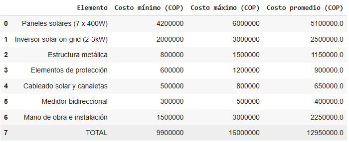

Energía Solar
El proyecto Semilla Solar se fundamenta en el empleo de energía solar fotovoltaica conectada a red (on-grid), utilizando paneles solares para convertir radiación solar directa en electricidad.
¿Por Qué Es Adecuada Para Esta Zona?
La energía solar resulta altamente adecuada para La Loma debido a la alta irradiación solar de la zona del Cesar, con un promedio favorable para la generación constante de energía limpia. Además, la regulación nacional permite compensar excedentes energéticos mediante créditos eléctricos, lo que optimiza el rendimiento del sistema incluso sin baterías.
Ubicación del Proyecto
El proyecto se desarrolló en el corregimiento La Loma, perteneciente al municipio de El Paso, al norte de Colombia, entre las poblaciones de La Loma y Potrerillo.
El Parque Solar ocupa una extensión de aproximadamente 387 hectáreas, lo que equivale a 3.870.000 metros cuadrados. Esta amplia área fue seleccionada estratégicamente por sus condiciones climáticas, su historial energético y su disponibilidad de terreno, facilitando la transición de una economía minera a una basada en energías renovables.
Energía Cubierta
El Parque Solar que cuenta con más de 400.000 paneles sobre 387 hectáreas y una capacidad de 187 MWdc (150 MWac), genera alrededor de 420GWh anuales, abasteciendo energía limpia a unas 600000 personas. Esto equivale a cubrir prácticamente el 100% del consumo del municipio de El Paso y se estima que representa aproximadamente un 44% del consumo energético total del departamento del Cesar. Además, la planta evita cerca de 198000 toneladas de CO₂ al año y generó más de 1.700 empleos locales, con el 77% de trabajadores del departamento.
Tabla de Gastos
Fuentes de Financiamiento del Proyecto
El proyecto Semilla Solar puede financiarse gracias a múltiples mecanismos disponibles en Colombia, que incluyen fondos públicos, cooperación internacional y esquemas innovadores del sector privado:
- FENOGE (Fondo de Energías No Convencionales y Gestión Eficiente de la Energía)
- Ministerio de Minas y Energía.
- Cooperación internacional.
- Incentivos fiscales.
- Financiamiento privado, como Leasing verde y Acuerdos PPA.